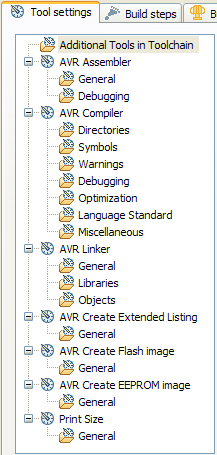
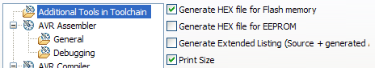

Customizing the Configuration
In the previous step we have build the project in the Release configuration. The build process generated an error, because it tried to make an .eep file with the eeprom data which our sample project does not have. With the next steps we will modify the Release configuration and tell it that we do not have eeprom data with our project. Some other configuration options will also be shown.
-
Right Click on the AVRtest project and select Properties
- Expand the C/C++ Build item and click on Settings
- Select Release from the configurations

|  |
Under the Tool Settings tab all active tools of the current configuration and some general options are shown |
- Select Additional Tools in Toolchain.
- On the right side deselect Generate HEX file for EEPROM and Generate Extended Listing

This removes these two tools from the selected configuration
- Click OK
- Right click on the Release folder and select Delete
This removes all generated files from the previous build
- Right click on the Project and select Build Project
The project is again build in the release configuration and this time the build process does not try to create an .eep file, so no more error messages are generated. Also no .lss file is created.
The deselected tools can be selected again at any time. Please note that any newly selected tools in the toolchain will not immediatly show up in the list of tools. You need to close and reopen the properties dialog page to see the modified toolchain.
This completes the Create and build a new project tutorial. You can now start hacking on your project or continue with the next tutorial: Upload a project to the target device with avrdude.
 Back: Changing the configuration
Back: Changing the configuration
Related Tasks
Add / Remove AVR specific Tools from the Toolchain
Related Concepts
Build Configurations
© 2007, 2008 Thomas Holland